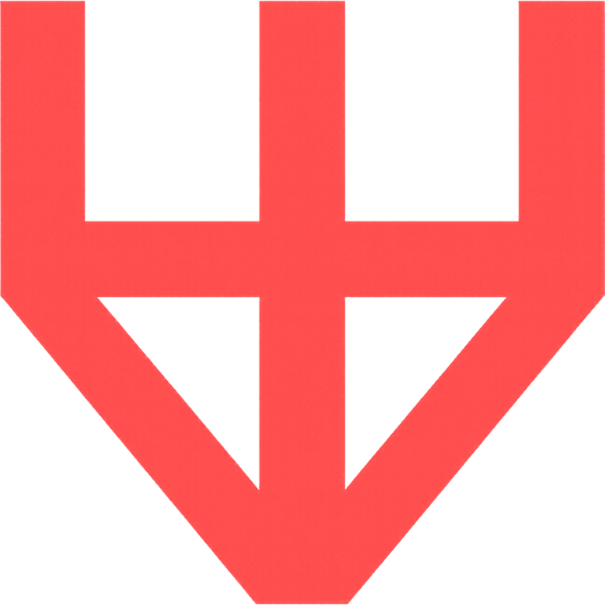

Welcome to Proevanism, comrade.
About Proevanism
Proevanism is an emerging ideology centered around three core tenets:
- Appreciation of Red Pandas: Recognizing the inherent charm and unique nature of red pandas.
- Affinity for Slavic Culture: Celebrating the rich history, traditions, and aesthetics of Slavic peoples.
- Opposition to Unpaid Internet Moderation: Critiquing the exploitation of volunteer labor in online communities.
We believe in fostering communities that value genuine contribution and reject powertripping by volunteer moderators.